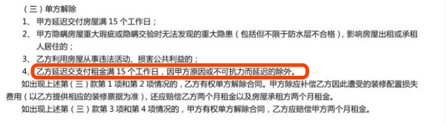
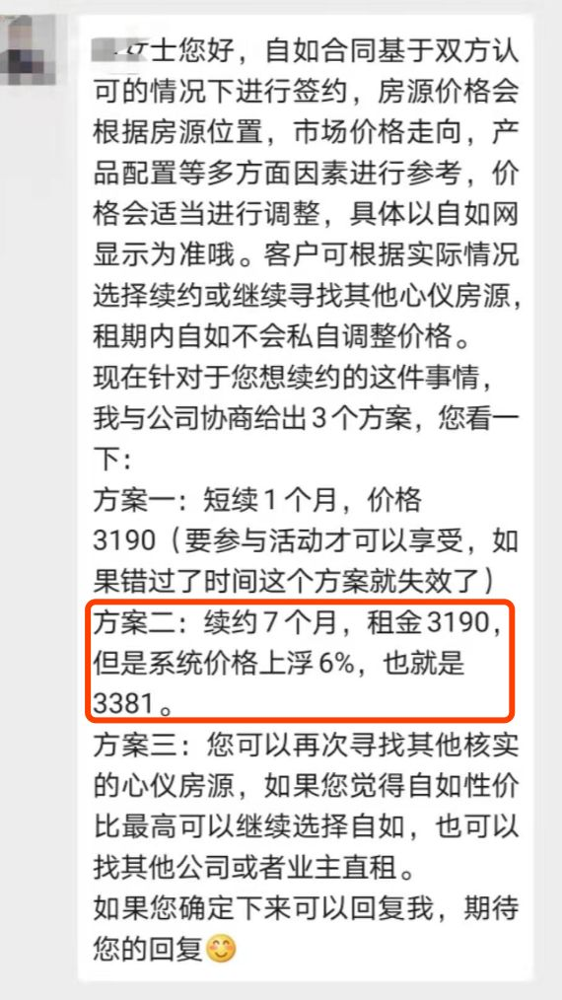

疫情之下，蛋壳自如们吃相为什么这么难看？
原文链接 备份链接 以下文章来源于燃财经 ，作者燃财经工作室 图片来源：Pexels 作者：苏琦 编辑：魏佳 本文来源：燃财经 （ID：rancaijing ） “ 年后本是租房高峰，因为疫情，流动性被锁死，公司只能打起了老租客的主意。 …

《创新经济战疫计划》，是燃财经在新型肺炎疫情期间推出的特别栏目，关注创新经济企业遇到的新难题、商讨应该采取的新对策，希望能够帮助中小企业一起战胜挑战、把握机会。
作者 | 苏琦
编辑 | 魏佳
“如果没法续约，我难道要戴着口罩睡大街吗？”
时代中的一粒灰，落在每个人头上都是一座山。但很多租客没想到，这座山来得如此猝不及防。仅仅一个春节，从老家回到大城市的租客们发现，想继续住下去并不容易。
蛋壳公寓要求房东免租一个月，但对租客的房租照收不误，部分房东收不到钱要求租客搬走；自如的多名租户则表示，想要续租遭遇临时涨价。
针对租客的质疑，蛋壳方面回应称，在补贴上蛋壳的支出要远超出征求业主免租的金额，因此绝不会存在“赚差价”，并出台了一系列措施补贴租客；自如方面回应称，已经跟进到租客，多是因长租客想改为短期续约引起，与租客基本达成共识。但这样的回应在租客眼里只有两个字：“牵强”。
长租公寓“吃相难看”，与其“二房东赚差价”的商业模式息息相关，业内人士介绍，按照业内默认指标，出租率在90%以上才有可能盈利，目前整个行业都处于亏损状态，而长租公寓企业的现金流入主要依靠租金收入，年后本来是一波租房高峰期，现在因为疫情，流动性基本被锁死，只能在老租客身上做文章。
“实际上，这次处在风口浪尖的自如和蛋壳也是无奈，这个行业受损失最大的就是它们这种自己出钱拿楼、赚差价的公寓方。”一名业内人士称。
2019年，长租公寓迎来倒闭潮，虽然先后有青客、蛋壳流血上市，但疫情的爆发成了企业运营的试金石。截至发稿，青客公寓上市时市值8.26亿美元，当前市值仅为5.89亿美元；蛋壳公寓上市时市值为27.4亿美元，过去一个月不到，目前市值为24.78亿美元。
长远来看，大家租房的需求其实还在，只是高峰往后推了三四个月，疫情缓解之后会出现一波流量反弹。想要挺到那个时候，“自杀式涨价”或许是最坏的选择，企业可以尝试线上看房、社群招租等方式，同时，也要运营好已有的老用户。随着大型社区式租赁住房入局，2020年，长租公寓行业又将迎来新格局。
***刚回北京***
***蛋壳租客就被房东通知搬家***
2月11日，刚回北京的蛋壳公寓租客杨阳接到了房东的电话，要他准备好搬家。
房东称，按照她跟蛋壳签的合同，2月15日是打款日。但这个月蛋壳通知她不给打款了，并因为疫情的影响要求她免租1个月，房东提醒杨阳，到期如果蛋壳还不付钱，按照她跟蛋壳之间的合同，15个工作日之后合同就作废，杨阳一家也得搬出房子。
然而杨阳和蛋壳的房租合同已经签到了2020年11月，且一年房租已经全部付清。在这样的情况下，杨阳的处境十分被动。
这两天，杨阳被拉入好几个蛋壳维权群。除了杨阳这种情况外，另一部分租户反映，他们因为回不来等原因想退租，但客服回复称退房预约已经排到3月1日。
群里的房东情绪也很激动，1月24日开始就有人没有收到打款了。“如果按期收不到租金就断水断电换门换锁”，群内不少房东已打算强制收房。
“对于我们租户来说，这是房东跟蛋壳之间的纠纷，其实跟租户没有直接关系，最后却直接影响了我的生活。这时候业主如果强制收房，我难道要戴着口罩睡大街吗？”杨阳告诉燃财经，他打电话给12345、110以及蛋壳客服，均没有得到有效的解决方案。
2月14日早上，蛋壳方告诉杨阳会正常给房东打款，让他安心住。但直到截稿，房东依旧没有收到房款。眼看离房东给的最后期限越来越近，杨阳每天提心吊胆，害怕自己无家可归。
房东、租户与蛋壳争论的焦点在于，疫情之下，蛋壳要求房东免租一个月，但没有为租客减免租金，“房东免租、租客交租”的行为引发不满。“租客刚跟我说完交了房租，蛋壳转头就要我免租金，真怕蛋壳哪天碎了。”一位房东称。
多名北京地区的房东在维权群表示，蛋壳并没有征求房东是否同意减免房租的意见，而是直接通知会暂停打款。后来，蛋壳方给出两个选择：第一，不免租金就正常解约，可以赔偿一个月（即退回房东押金）；第二，如果走法律程序解决，蛋壳方可以以不可抗力的因素，不给予赔偿。
关于业主在蛋壳不如约支付租金情形下能否收房的问题，北京地区的律师华强称，根据合同来看，业主与蛋壳仅是委托管理关系，业主与租户才是租赁关系。在租户已经按照约定支付租金的前提下，即使是支付给蛋壳，法律上也视同支付给业主了，业主无权要求租户腾房。至于业主的损失，可依合同向蛋壳追讨，包括但不限于违约金，实际损失等。

房东与蛋壳的合同
华强称，根据法工委的意见，本次疫情确实已经定性为不可抗力。但根据业主提供的信息，蛋壳已经提前收取租金，且北京并未官宣封城，个人行动并未受到强制性阻碍，业主与蛋壳的财产委托管理服务合同不存在不能履行的情况。所以，蛋壳单方以不可抗力解除合同的理由于法无据。
另一位北京中南律师事务所的陈卫平主任律师称，根据《财产委托管理服务合同》第八条第（四）项规定，出现蛋壳利用房屋从事违法活动，损害公共利益的、蛋壳迟延支付租金满15个工作日的，房主有权单方面解除合同，蛋壳应赔偿房主两个月租金。
对于诸多质疑，2月3日晚，蛋壳公寓发文指出，针对武汉无法返城的租客，蛋壳公寓计划为租客返还一个月租金。对于武汉地区以外无法返程的租客，蛋壳公寓将根据各地政府发布的因疫情延期返工的天数，返还租客相对应的租金，或提供相对应的免费延住天数。补贴在3月2日后返还至蛋壳公寓APP个人中心的钱包中。
然而，租户对此并不买账。一方面，返还金额并不能提现，只能用于抵扣房屋服务费、维修金、水电燃气费用（非自缴）、租金（分期月付除外）及续租、首付款等蛋壳APP内的账单费用。另一方面，这一期间仍旧居住在出租房内的租客将得不到补贴。
2月15日，蛋壳再次回应称，在原有的续租优惠活动上，增加首月立减50%月租金，住满6个月后再返20%的优惠活动，但前提是用户在2月1日至2月29日合同期满且续租满一年，且依旧无法提现。

维权群流传的蛋壳应对业主的方案
***自如租客想续约***
***只能接受涨价***
与此同时，另一家长租公寓自如也被指在疫情时期变相涨价。
“不涨价就不给续约，不然只能搬走，可现在我能搬去哪里呢？”北京的一位自如客肖莉莉原本签了一年合同，2月27日到期。在2019年12月时她就和自如管家沟通过续约的事，管家称到时候提前一两个月续租就可以，还有优惠，优惠活动会在APP显示。
可就在2月7日，她接到管家的电话，称房子续租不了。问及原因，对方称她住的这套是止血房源，按照市场价来看属于亏损房源，现在要回归市场价，系统内部已经将这套房源锁上，续约的话需要向公司申请。
“我的第一反应是不可能。2020年1月，我隔壁房间还新签了一个客户，按优惠价格签了一年的合同。同样房源，为何我续租就不可以，新签的那户就可以入住？”肖莉莉告诉燃财经，那时候她人都没回去，租的房没人住还照样交房租，现在续租无门，自如这样对待老客户让她寒心。
由于疫情期间不便搬家，无奈之下她让管家帮忙申请续租，隔了两天对方回复了三个方案，简单来说就两个字：涨价。

蛋壳管家给肖莉莉的续租涨价方案
第一种方案是按照原价申请短租一个月，然后再去找其他房源，但自如没有审批下来；第二种是申请续租7个月，但这属于短租，要在原来的基础再加6%的租金涨幅。按照现在3190元/月（不含服务费）的价格，总价要涨到3381元/月。第三，不续约搬离。
后来肖莉莉加了一些维权群，才知道很多自如租客都面临这种情况。
管家告知租客涨价
维权群内，一位租客遇到了和肖莉莉同样的话术——之前说好提前一个月续约有服务费打7折的优惠，但续约时要涨价，租客还不能自己续约，只能由管家发起。
另外一位女生人还没有回到北京，遭遇涨价后不想续租，她在群里称，“我现在人还在外地，房子还有两天到期的时候，管家告诉我说房子续租不了了，我只能叫朋友去把东西搬走。这和高价卖口罩有什么区别？他们这是在特殊时期把我往外撵啊。”

微博“自如趁疫情涨价”话题
微博上自如趁疫情涨房租的话题已有数千万人参与，其中热度最高的帖子写着：自如趁租客不便搬家换租时“坐地起价”，肆意哄抬租金，多地区续租普遍增长10%-30%，最高达38.3%。
对此，自如于2月10日公开回应称：“已经跟进到租客，多是因长租客想改为短期续约引起，与租客基本达成共识”。但网友的高赞评论称：重新定义“与租客达成共识”。
*****疫情成了长租公寓模式的试金石*****
对于长租公寓行业来说，年后本来是一波租房高峰期，现在因为疫情直接断送这波行情。
“根据以往的数据，年后基本上从初六开始，用户的网站和APP的访问量就开始攀升。 今年因为疫情，大家短时间内都没有换房需求，数据断崖式下跌。”蘑菇租房联合创始人龙东平观察到，大家最愁的还是没办法带人看房，很多外地租客甚至还在老家没回来。
爱分析高级分析师黄勇也告诉燃财经，长租公寓企业的现金流入主要依靠租金收入。受疫情影响，各地复工时间推迟，导致春节后这段传统旺季中有租房需求的流动人口骤减，长租公寓的出租率显著下降，并出现一定比例的退租。
在运营层面，很多社区街道采取了较为严厉的防控措施，甚至拒绝外地租客进入小区，引发租客权益纠纷、疫情防控等事务需要处理；而长租公寓企业自身也和其他行业一样面临员工复工难等问题，加大了运营难度和人力支出成本。
在这种情况下，原本就现金流吃紧的长租公寓行业压力更大。按照业内默认的指标：出租率在90%以上才有可能盈利，目前整个行业都处于亏损。根据青客公寓和蛋壳IPO时披露的财务数据，青客的账面资金不够维持一年，蛋壳的仅够再支撑3-4个月。
从1月9日青客发布的上市后首份财报来看，青客2019年第三季度成本及费用总额为4.37亿元，与上年同期的4.35亿元基本持平，其中，成本最高的是运营成本，达到3.45亿元。但第三季度净亏损为1.25亿元，较上一季度的净亏损7163万元扩大75%。
“过年之前空置的房源现在租不出去，已经入住的租客也没办法搬走、找房子，流动性被锁死，只能在老租客身上做文章。”一位业内人士告诉燃财经，“实际上，这次处在风口浪尖的自如和蛋壳也是无奈，这个行业受损失最大的就是它们这种自己出钱拿楼、赚差价的公寓方。”
该业内人士称，从企业角度来看，有些房源可能以前是为了促销降低了价格，本来这一轮租约到期就准备开始调价，只是正好赶上了疫情。“但临时涨价的行为，大家肯定都会记在心里。越是这个关头，越是要采取更合理的沟通策略。”
长租公寓行业诞生于2010年，随着房价高企以及城市化进程加快，激发了租房市场的爆发，资本大举押注，2015-2016年，长租公寓行业正式步入快车道。

图 / 视觉中国
知名房产博主鹏程蛇口称，通常来说，资本和大公司一旦介入一个行业，个人基本没有生存机会，但租房行业却相反。个体化经营的二房东具有成本优势，在移动互联网时代，他们也可以各租赁平台发布租房信息，客源并不比机构差。相比之下，长租公寓没有足够的成本优势和渠道优势，根本赚不到钱。
事实上，长租公寓们为了扩张规模，拿房的成本甚至高于个体二房东们。为了上市，蛋壳需要迅速扩张，在去年也被曝出通过加价方式拿房。一位业主告诉燃财经，“我家的大开间，自如出价2500元，我爱我家出2700元，蛋壳出3000元。收进来之后，两居改三居，再加价租出去，赚差价。蛋壳比别的中介给的房租价格高500元，比小区业主直租还高200元。”
“长租公寓看起来增加了出租房源，其实房东的房子是固定的，无论谁来打理和经营，总数没有变。没有增加房源，长租公寓却要投入租金，面对高经营成本，他们就会提高租金价格，并希望在某个局部地方垄断房源，抬高租金。”鹏程蛇口称。
但这样的方式并不可持续。上述业内人士称，不论通过谁来租房子，租客看中的还是价格和地段。“只要租客走进去一看，装修、电器、家具、环境，心里就有一杆秤了，租客有自己的鉴别能力。”当品牌的作用被弱化时，涨价过度就会适得其反。

***疫情结束后将迎来反弹***
***2020年仍有新机会***
“长远来看，租房的需求其实还在，等疫情缓解之后，肯定会出现一波流量的反弹。”龙东平告诉燃财经，就看大家能不能挺到那个时候。
业内人士认为，在这个阶段，不能完全依靠业主降租、政府扶持，更应该多方努力解决现金流，最大限度降低运营成本，及寻求新的融资渠道。
同时，线上看房、社群招租等渠道也应该尝试，为疫情结束后的需求反弹做准备。现在不少长租公寓企业都开始开展线上看房，此前，自如等APP也有360度看房功能。
“还可以通过租客群等垂直渠道进行招租。”龙东平称，作为一家为全国中小公寓方提供SaaS管理系统的创业公司，蘑菇租房在2月份赠送总计100万份电子合同，将找房——签约——租后都搬到线上。
另外，鉴于一些长租公寓品牌的影响，如何运营好已经签约的存量租客，也是当务之急。一方面提升续租的可能性，降低退租风险；另一方面，租客转介绍，能降低获客成本，提高出租率。
“如有业主同意免租，也可以减免租客的租金。”龙东平称，“业主租金占公寓整体运营成本的六成以上，跟业主和产权方争取优惠是最直接的节流方式。但说到底业主愿意降租是情分，不愿意降租是本分。可以尝试半个月到1个月的降租，或根据目前的‘空置房源’去谈，成功率可能更大。”
现在整个长租公寓还处在以亏损来换规模的阶段，规模越大反而亏损得越多。对于市面上大量的几十、几百套规模的中小公寓玩家，没有人会专门去做亏本生意，所以往往还能盈利。上述业内人士称，疫情之下，这些小公寓方由于资金储备不足，需跟进政府财税扶持政策，想办法借钱挺过去，或者拿以前的利润出来填坑。最坏的打算就是急刹车，把房子退给业主，等疫情过去了再续租。
根据中指研究院发布的《2019长租公寓市场年报》，据不完全统计，2018年长租公寓领域，企业获得融资37笔，约1491亿元；而2019年仅有16笔，约360亿元， 金额不足去年的1/4。资金向头部企业靠拢，包括蛋壳、魔方、佳兆业、龙湖等。
2019年行业回归理性，2020年格局则将迎来调整。业内人士预测，长租公寓已经经历两次迭代，第三次迭代即3.0版的大型社区式租赁住房，将以大体量的优势影响着行业格局。这类租赁住房也将是国家扶持重点，成为市场上重要的增量供给。

对于这类公寓而言，由于之前没有运营经验，所以住建部明确2020年将重点探索这类项目的运行机制，将其交予长租公寓机构运营，这也成为今年长租公寓行业的新机会所在。
*题图来源于视觉中国。应受访者要求，文中杨阳、华强、肖莉莉为化名。


你用什么平台租房？房租涨了吗？
欢迎在评论区留下你的故事，我们会在点赞前三（超过20个）的评论里挑选一位网友，送出腾讯视频季卡一张****。文章转载请点击公众号菜单“转载合作”。
一手资讯/硬核报告/每日红包/线下活动！就差你了！快加微信rancaijing02回复“读者”一键上车！


燃财经工作室
点个在看吧😘
微信扫一扫赞赏作者 赞赏
长按二维码向我转账
点个在看吧😘
受苹果公司新规定影响，微信 iOS 版的赞赏功能被关闭，可通过二维码转账支持公众号。
原文链接 备份链接 以下文章来源于燃财经 ，作者燃财经工作室 图片来源：Pexels 作者：苏琦 编辑：魏佳 本文来源：燃财经 （ID：rancaijing ） “ 年后本是租房高峰，因为疫情，流动性被锁死，公司只能打起了老租客的主意。 …
原文链接 备份链接 Original 老九论财经 三联生活周刊 三联生活周刊 About Feature 一本杂志和他倡导的生活。 Today 在全国人民对抗肺炎疫情的战役中，很多人都在想办法贡献绵薄之力，但是一些浑水摸鱼的行为也开始浮出 …
原文链接 备份链接 文/周雄飞 编辑/大风 据锌财经了解，从1月31日开始，武汉、北京、杭州和深圳等地很多与蛋壳公寓签约的房主都接到了蛋壳官方的“拜年”电话，并且被通知：由于疫情影响，响应国家号召，要免去一定时间的房租。 还没等到接话询 …
原文链接 备份链接 记者：吴波 “ 自如回应涨租是个例，但租客并不认同。 ” 因疫情在家办公的北京自如管家们，却出乎意料的比任何时候都更忙。 2月10日一整天，一位负责北京区域的自如管家，不断回复着自如客关于续租涨租的电话咨询。与此同时， …
原文链接 备份链接 来源：雪球App，作者： 腾讯棱镜深网，（https://xueqiu.com/6718098612/141371565） @今日话题 作者 | 郭亦非 编辑 | 张庆宁 出品 | 棱镜·腾讯小满工作室 2月14日，情 …